!!Fun with Magma!!¶
This tutorial covers navigating the caverns, locating magma, and raising it to the surface for use. It builds on the fort from the DF Walkthrough Pack and picks up at the end of Chapter 9 of the DF Walkthrough.
Note: Unless otherwise stated, this tutorial uses the Workflow utility for building items. We will also use the Quickfort utility during the pump stack construction process. All these utilities are bundled in the latest Starter Pack maintained by PeridexisErrant.
The save I used is DFFD file 11179.
Contents
Delving for Magma¶
Welcome to the magma tutorial! Magma is an incredibly useful - and dangerous - substance in Dwarf Fortress. It eliminates much of the fuel needed for smelting and smithing, allows for mass production of steel, will burn your enemies to a crisp, and opens the possibility of creating infinite quantities of glass and clay objects. It also tends to light everything on !!Fire!!, melt important parts of your fortress, and is usually located inaccessibly deep underground. But if you put in the work and understand magma’s unique properties, you will discover how much fun magma adds to your fortress.
First, we must locate magma on our map. Nearly all forts lack magma at the surface and in only a lucky few is it found above z-level -50. That means that we will have to dig deep to find it, through caverns full of unknown horrors. Mitigation of the risk posed by the caverns is essential, and the steps below outline important precautions to take as you delve into the depths of the world.
- Start by digging a Down Stair adjacent to the lowest part of our staircase.
- Place a Floor Hatch (
b,H) over the Down Stair.
This small hatch will act as the final line of defense between anything that comes up from the caverns and our fortress. It will stop anything directly below it so long as we are able to Forbid the hatch in time.
- Assign a war dog to each of our Miners. Hit
u, highlight the first Miner, and hitzto Go to Unit. Hitp,eto bring up a list of work animals and hitEnterto select a Stay war dog. - Note: If you’ve pastured your war dogs in a spare room as I have (to save a few FPS), be sure to un-pasture them or else they will not join their new owners.
- It’s a good idea to create a burrow at the Hatch in anticipation of stationing melee troops there. See DF Walkthrough Chapter 9.3 for instructions on using burrows to control troops.
- Speaking of melee troops, we have enough cannon fodder to fill the
ranks of our two melee squads. Hit
mand top off the ranks with new draftees. - Don’t forget to ensure that we have enough arms and armor to issue to the troops. A full set of armor includes a helm, mail shirt, breastplate, gauntlet (each job makes a pair), greaves (each job makes a pair), high boot (each job makes a pair), and a shield.
- Take a second to edit the squads’ schedules to respond to combat
alert states with 10 minimum soldiers. Hit
m,s, select Prim. Kllzn. Gallery with/*, and hite,*,Shift+Enter. Then hitcto Copy orders andpto paste them in for every month in each squad. Do the same thing for the other alerts, cycling between them with/*. - Finally, if you’re up for it, create a military squad manned only by your Miners, assign as a uniform a metal helm and mail shirt, and keep their schedule on Inactive. This will cause the miners to don some protective gear to increase their chances of surviving unexpected encounters.
That’s about all we can do to up the odds when dealing with the caverns. It’s time to delve for magma. Dig a U/D Stair straight down from the Hatch as far as you can go, and see what happens.
Welcome to the underworld.
- Make sure you keep the game paused for now. Hit
Enterto dismiss the first notification.
These popups notify you of two distinct underground features. The first expansive cavern deep underground refers to this cavern layer itself. A downward passage is a rift that connects two or more cavern layers. The discovery of a downward passage is not good news for us because it gives things from deep below access to our fortress.
Let’s assess the situation. Take a good look around the cavern using
k. Note the underground lake with giant mushroom trees growing
in it, the muddy, farmable cavern floor, and the various wiggling
things moving around. Take a look at one of the wiggling {
things.
It’s an olm, whatever that is. Notice that there’s no option to press
Enter to look closer at it like you could with, for example, a
dog. Furthermore, hitting u and scrolling over to
Others, we see that there’s no mention of any
Olm. We can’t even hit s and order a squad to
attack it on the map. We’ll find the same thing to be true for the
frog-looking things in the water, called cap hoppers.
Breathe a sigh of relief; these are just harmless vermin. In fact, looking at the Others tab on the Units screen, we only see a Tiercel Peregrine on the surface and a Kea that flew into a trap last season. Currently, there are no known hostiles anywhere on the map.
Although we do not immediately see anything bent on our utter destruction, we lack line of sight on all parts of the cavern, not to mention whatever is at the bottom of the downward passage. Consequently we must close off access to the cavern before anything nasty shows up. Something unseen could be on its way up already, having sensed the minute change in pressure as long-closed stillness is disturbed by our miner’s pick.
- Keeping the game paused, find the Up/Down Stairway that’s been carved at the floor of the cavern.
- Go up one z-level, Mine one tile north, then dig an Up stair on the tile north of that.
- Hit
zto Remove Up Stairs/Ramps on the existing Up/Down Stair. - Connect our central staircase to the Up stair. Go up one
z-level, hit
d,j, and designate a Down Stair to be dug over the Up stairs below. Then, connect the Down Stair to your central staircase with a tunnel.
- Hit
d,xand remove the dig up/down stair designation under the cavern floor. Leaving it there will cause a miner to merrily continue burrowing downward. - Finally, amend the Inside burrow so dwarves don’t enter the caverns.
Hit
w, highlight the Inside burrow, hitEnter,rto change to Currently erasing, and erase the Inside burrow for all of z-level -20 as well as for any parts of the cavern visible on other z-levels.
The Remove Up Stairs/Ramps designation will leave us with only a downward stairway into the caverns. We must cover that up with a hatch and forbid it as quickly as possible to seal the cavern. Alternatively, we could build a floor over it with the closest available rock, so if you do not have a Floor Hatch on hand, that’s the best backup plan.
- Use
.to advance time tick by tick or unpause and repause in rapid succession. Advance time only long enough for the designations to be dug out. - Hit
b,Hand place the Floor Hatch over the Downward Stairway leading to the caverns. - Advance time only long enough for the hatch to be put in place, then
immediately hit
q,l,oto Forbid it and set it to Keep tightly closed.
If nothing came up from below, exhale and toast the dwarf who affixed that Floor Hatch because no creature can get through it so long as it remains Forbidden.
The first cavern layer’s muddy floor would make excellent underground farms and there’s probably exotic things to trap down there, but for now we have to continue the magma hunt. Let’s find a pillar thick enough to run a stairwell bypass through and link it back up to the main stairwell under the cavern floor. I see an appropriate one just east of our main up/down stairwell.
- Designate an U/D Stair to be dug in the pillar west of the main up/down stairwell on the cavern layer, bypassing the cavern.
- Connect the bypass stairwell to our original Up/Down stairwell designation: go down one z-level and designate another U/D Stair, and under that, an Up Stair. Connect the Up Stair to the original Up/Down stairwell designation with a normal tunnel.
- Complete the connection by hitting
d,jand re-designating the original Up/Down stairwell to be a Down Stair
- Connect the bypass stairwell to the Up/Down stairwell leading to the
fortress: go up one z-level from the bypass stairwell designation, hit
d,j, and designate a Down Stair. Then Mine straight west to link back up with the main Up/Down stairwell.
- After the digging is complete, put a Floor Hatch on every Down Stairway you can. These will act as additional buffers if something makes it in from below.
Unpause the game and allow your miners to dig deeper. We are only at z-level -20; there’s a very long way still to go.
We’ve hit a second cavern layer and another downward passage. Like before, keep the game paused until you set up your dig designations to secure the breach.
- Hit
uand scroll to Others to see if there’s any immediate threats. Thankfully, nothing is immediately visible. There are lots of bats, though, which are icky. Better seal this up fast. - Repeat the steps above to seal the stairwell. Remove the up stairs above the breached stairwell, dig upward stairs to reconnect with the stairwell, throw a hatch or floor over the breach, and bypass.
- Don’t forget to delete the sections of the Inside burrow, remove the dig designation under the cavern floor, and cover all downward staircases with a floor hatch.
This time, I elect to construct a floor instead of installing a hatch because the stone was readily available and the closest hatch was 152 tiles away.
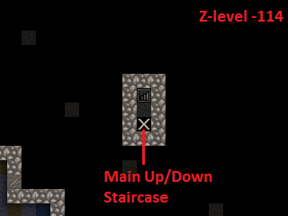 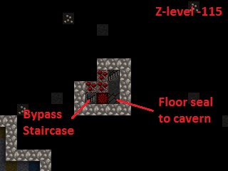 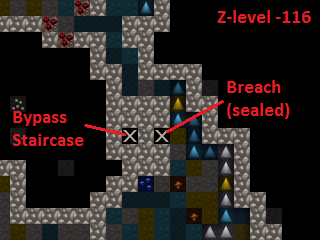 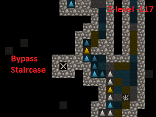 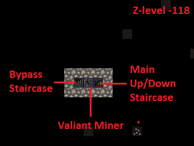Nothing to do but continue to dig.
Not long after the second cavern, we stumble into a third. As usual,
hit u and scroll over to Others to see if some
miners are about to meet a bloody end.
There’s a new creature on the Others list, a
Jabberer. Hit v to examine it.
A huge monster that lurks in caverns deep under the earth.It uses its wide beak to reach down and pluck up unsuspectingintruders.
Jabberers are terrifying. They are as big as elephants and much more aggressive, making a beeline to any exposed dwarf to rip it apart. Moreover, our military likely cannot take one down without suffering many casualties.
Hit u again, highlight the Jabberer, and hit
z to locate it on the map.
It’s not far from the breach we made in the caverns, but it’s our lucky day - unlike the other breaches we made in the upper caverns that led directly onto the cavern floor, this one is in a rock pillar one z-level above the cavern floor. Unless the Jabberer can climb, it cannot path into the fortress.
- Pray to Armok that this Jabberer hasn’t been training its climb skill and make the usual designations to seal and bypass the cavern layer, remembering to place hatches and trim the Inside burrow.
- Keep an eye on the monster - place your cursor over it with
vand hitfto follow it. If it starts moving toward the breach, we must immediately evacuate the up-down staircase and seal the floor hatches we’ve placed.
A Sea of Fire¶
Let’s push further downward and locate that elusive magma. So far we’ve had no luck finding magma close to the surface, so we’ll continue mining down until we encounter signs of it.
- Reconnect the bypass staircase to the main up/down staircase, allowing your miners to continue downward.
- While we’re down in the depths of the world, hit
H,F3,zto create a hotkey to take us straight down here. Give it a name withn- in a fit of creativity, I called it Basement.
Bingo. The miners have stopped work because a tile designated to be mined was found to be warm to the touch. That means there is magma on the other side.
- Hit
dso you can see the flashing yellow ☼ signifying warm stone and find the tile where the dig job was cancelled. - Hit
xand erase all remaining dig designations on that level and below it. - Designate an up/down staircase on the cancelled tile. Let’s get a look at that magma.
We’ve found what we’ve been looking for - the magma sea at the bottom of the world.
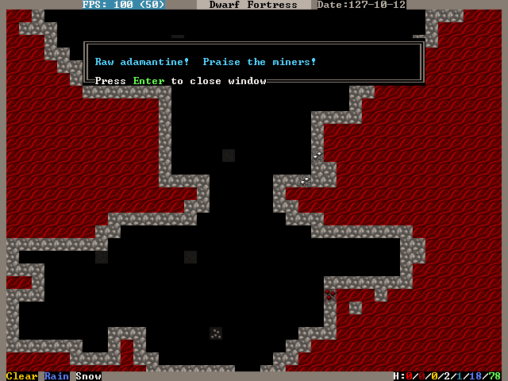Actually, we’ve found quite a bit more than what we’ve been looking for. Adamantine is the strongest, sharpest, and lightest metal in existence, but it requires special precautions to exploit. Adamantine is beyond the scope of this tutorial and can be very dangerous, so we’ll leave it alone and focus on working with magma.
The magma sea is full of nasty critters, just like the caverns, so let’s seal it off until we’re prepared to deal with it on our own terms.
- Follow the same procedure as before, removing the up stairs, fixing a floor hatch or building a floor, and rerouting back to the main up/down staircase.
- If you get a warm stone cancellation, verify that you’re not digging into the magma sea itself and re-designate the tile to override it.
Take some time to get acquainted with the magma sea and its inhabitants. Some parts are made of normal stone and others are Semi-molten Rock, which cannot be mined through. Magma Crabs are unpleasant crustaceans that spit fire, setting your dwarves alight. Fire snakes are vermin that normally keep to themselves but can cause problems if trapped - they are hotter even than magma, so when a dwarf transports a caged one to a stockpile, the cage burns away and looses the fire snake to ignite everything as it wiggles around.
We didn’t risk the fortress dodging Jabberers and other forgotten horrors just to admire the view. The magma sea isn’t much good to us all the way down here. To harness magma’s potential, we need to raise it to the surface. We’ll do so by building a ‘pump stack.’
A Well-Laid Foundation¶
A pump stack is a series of pumps stacked directly on top of one other, each alternating in orientation so that they pump liquid from bottom to top. The pumps can be operated by dwarves, but the extreme height of ours makes it more practical to use generated power. We must also consider the temperature of magma when building the pump stack, using only magma-safe materials whose melting point is higher than the temperature of magma.
Before we start digging, it’s a good idea to start building the
materials needed for a pump stack. A single Screw Pump
(b, M, s), as the game calls it, is built with
one Block, one Enormous Corkscrew, and one
Pipe Section. Each of these must be made out of a
magma-safe material or else the pump will deconstruct when it touches
magma. Additionally, we will need a supply of magma-safe doors to seal
the pumps’ output chambers.
The Blocks and Doors can be made out of some kind of magma-safe rock, and I noticed that we have lots of quartzite available on the upper levels of our fortress.
- Stick three or more Mason’s Workshops in the quarry area at level -9. There is lots of quartzite already on the ground, but we probably will need to mine for more eventually.
- Streamline the production process by creating a quartzite-only
stockpile around the Mason’s Workshopes. Hit
p,tto create a custom stockpile that only allows quartzite. It’s found in the Stone -> Other Stone submenu. - Hit
qover the quartzite stockpile,w, and change the maximum wheelbarrows to 20. - Speaking of which, hit
j,m,qand put in an order for 30 wooden wheelbarrows. Go to the Carpenter’s Workshop and cancel some of the bucket orders to make room in the queue. - Configure the quartzite stockpile to give to the three
Mason’s Workshops. Hit
qover the quartzite stockpile,g, andEnterover each Mason’s Workshop you just built. This is what you should see:
Now, the only source that these workshops will use when executing jobs is the linked quartzite stockpile. This ensures that all products made here will be magma safe.
- At the three mason’s workshops, add orders for an additional 150 doors and an additional 150 blocks. You will need to edit the current workflow ranges to accomplish this.
- Make sure to delete the orders for doors and blocks at the two Masons’ Workshops on z-level -5. Otherwise we may fall short of our magma-safe door and block targets.
Magma-safe Enormous Corkscrews and Pipe Sections are more difficult to produce. We have two options - forge them from iron at a Metalsmith’s Forge, or make them from glass at a Glass Furnace. Although we have the infrastructure already in place to start making iron components, we shouldn’t expend our finite iron ore reserves on corkscrews and pipe sections. Each corkscrew takes one bar of iron to produce and each pipe section takes three, so making 127 of each out of iron would take 508 iron bars total! Glassmaking requires only sand, which is infinite, and 127 units of charcoal for fuel. Therefore, the glass option is clearly the better course of action.
Let’s beef up our glass production facilities. Yellow sand is found on z-level -2, so that’s where we will locate our Glass Furnaces.
- Build a set of three Glass Furnaces to pump out Screw Pump components and another five to run Collect Sand jobs so that we have a steady supply. Here is my setup:
- Make sure to leave room for a sand bag stockpile near the producing Glass Furnaces. Sand bags are located at the bottom of the Furniture/Siege Ammo menu.
- On each of the three production Glass Furnaces, set up a production run of 150 Make green glass tube and Make enormous green glass corkscrew.
- On the five spare Glass Furnaces, order Collect Sand with a Workflow limit of 25-30 powder of any sand. It’s important to keep sand bags available or glass production will cease.
- Sand collection and storage requires lots of bags, so increase the workflow limit for bags at the Clothier’s Shop to 30-40.
- If the clothiers can’t keep up, we’ll have to resort to making leather bags and micromanaging the Farmer’s Workshop to supply our clothesmaking industry. For this reason, it’s also a good idea to clean out all traders of cloth and leather. Bags are critical to our magma ambitions!
- Hit
i,e, fill the glass factory with a zone, and hitsto designate the zone as a source of sand. The dwarves will now collect sand here.
Now to expand our charcoal production capacity. Each operation at the Glass Furnaces burns a unit of fuel, and right now we have only a single Wood Furnace supplying the fort. Let’s build some more to keep up with the demand for charcoal.
- Place four new Wood Furnaces in our stockpile room close to the wood. We have a large excess of space in our Armor and Ammo stockpiles, so cut into those to make room for the Wood Furnaces.
- Queue up a Make Charcoal job in each and change the Workflow limits to 55-60. There’s currently plenty of excess wood laying around outside, but it never hurts to chop down more old growth forest. Wood stock is something we’ll need to keep an eye on.
Let’s do something to mitigate the extreme distances involved in hauling the pump components. We’ll make a large stockpile midway to the magma sea to store our quartzite doors, quartzite blocks, glass tubes, and glass enormous corkscrews.
- Go down to z-level -60 and dig out three large rooms for our doors, tubes, and corkscrews, as well as some space for blocks which will be neatly packed into bins. We will need 150 of each, so size the rooms accordingly
- While you’re down here, hit
Hand make a hotkey for this spot. - I accidentally carved my way into the caverns at this point. If that
happens to you, immediately wall up the breach (
b,C,w) and modify the dig designation to leave at least a 1-tile wall between the caverns and fortress. Here’s my setup:
You’ll end up with marble, sphalerite, and other detritus strewn everywhere. We need that space for our stockpiles, so let’s clear it:
- Hit
iand designate a 1x1 tile zone in a corner of one of the rooms, Place it withEnter. - Hit
dto make it a garbage dump. Hitd,b,dand mark everything you dug out to be dumped.
Let’s set up our stockpiles, starting with the quartzite doors.
- Hit
p,t, and usedto disable everything in the first column. Everything should be dark gray. - Navigate to Furniture/Siege Ammo and hit
e,b. Move right to Type and pressEnteron doors so that it toggles to white. - Move back to the middle column and navigate to
Stone/Clay. Move to the right column and find
quartzite (it helps to hit
sand start typing “quartzite”). HitEnterto toggle quartzite to white. - We do not care about door quality, so navigate to the middle column,
highlight Core Quality, and hit
pso that all core qualities are permitted in the stockpile. Do the same for Total Quality directly below. - Your screen should look like this:
- Press
Escape. Now, we are designating a stockpile that will accept only quartzite doors of any quality. Place the stockpile in one of your 11x11 rooms.
In the same way, create stockpiles for quartzite blocks, glass
corkscrews, and glass tubes. Remember to start with everything
disabled when setting the parameters. If you prefer, instead of
starting with p, t, you can place the stockpiles first
and use q to edit the options. Below are sets of keystrokes
certain to result in the proper stockpile in case you get lost, but
it’s a good idea to figure it out on your own.
- Quartzite blocks:
p,t, move to and hitdon everything in the left column, move to Bars/Blocks,e,b, move to Blocks: Stone/Clay, move to quartzite,Enter,Esc, and place the stockpile. - Glass corkscrews (located in Trap Components):
p,t, disable everything withd, move to Weapons/Trap Comps,e,b, move to Trap Components, move to Enormous Corkscrews,Enter, move to Other Materials, move to Green Glass,Enter, move to Core Quality,p, move to Total Quality,p,Escape, and place the stockpile. - Glass tubes (called pipe sections in
Furniture/Siege Ammo): :kbd:`p,
t, disable everything withd, move to Furniture/Siege Ammo,e,b, move to Types, move to pipe section,Enter, move to Other Materials, move to Green Glass,Enter, move to Core Quality,p, move to Total Quality,p,Escape, and place the stockpile.
There’s some housekeeping to do before we’re done with stockpile configuration. We have to disable quartzite doors, quartzite blocks, glass tubes, and glass corkscrews from our other stockpiles or else these products will wind up in our existing stockpiles instead of our new ones.
- Go to our main stockpile level on z-level -4. Hit
qover Furniture Stockpile #24, thensto bring up the settings. Disable quartzite in the Stone/Clay menu and Green Glass in the Other Materials menu. - Hit
qover Weapon Stockpile #18 to the west of the stairs. Hitsand disable green glass in the Other Materials section. - Go down one level and open the settings of Furniture Stockpile #5 in the northeast. Disable quartzite in the Stone/Clay menu and Green Glass in the Other Materials menu.
- Staying on the same level, open the settings for Bar/Block Stockpile #10 in the northwest. Disable quartzite in the Blocks: Stone/Clay menu. Now quartzite blocks will go only to the new block stockpiles on z-level -60.
Stacks on Stacks¶
Let’s turn our attention to digging out the pump stack casing. First, we should go over pump operation in order to understand what we’re doing. A pump lifts liquids - water or magma - from the level below it up to its level. In the image below, water is pumped from the right to the left and is retained on the pump’s level.
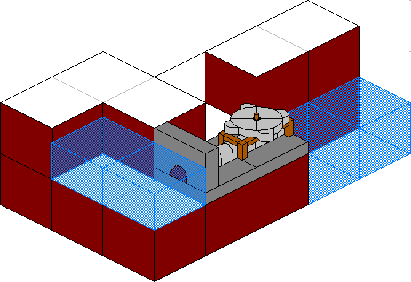A pump is 2x1 tiles large and operates under dwarf or generated power. One tile of the pump is impassible so as to retain the pumped liquid. The other is passable to allow a dwarf access to the pump. If we build a pump so that its passable tile rests not on a floor but atop the impassible tile of a pump below, the upper pump will transmit power downward to the lower pump. This power transmission property is the key to the pump stack’s utility because it allows us to stack an infinite number on top of one another.
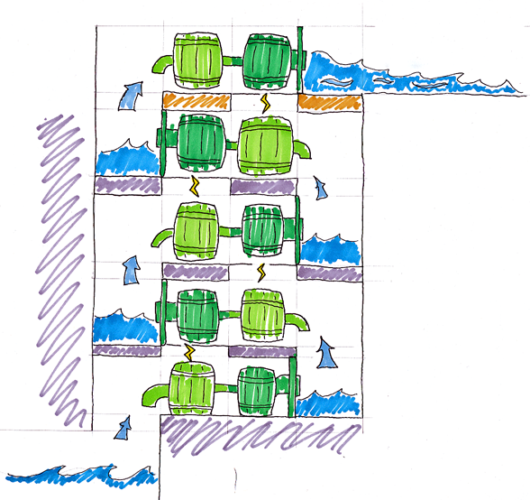 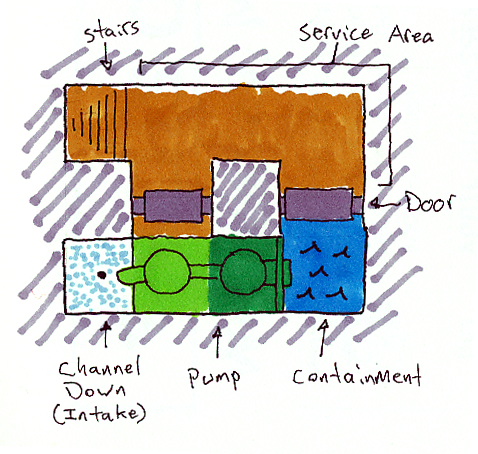Orientation of pumps in a pump stack is critical. In the illustration above, notice how the bottom pump draws water from the channeled out tile adjacent to it, pumps it up to its level, and outputs the water on the other side. Consequently, the next pump up must be rotated 180 degrees in order to draw from the output water of the first pump.
Therefore, when digging out the casing for our pump stack, we have to ensure that:
- Each pump’s intake tile has been channeled out to allow access to the magma beneath it,
- Each pump’s passable tile has been channeled out to allow power transmission downward, and
- Dwarves can access the passable tile of the pump as well as the output tile for maintenance and installation.
It helps to visualize what we need to do. The animation below outlines the pump stack construction process.
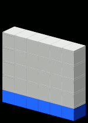We’ll use a modified design from the one above:
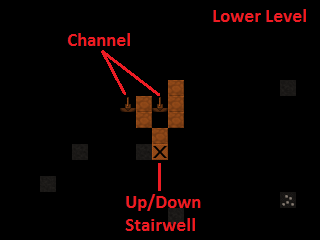Designated
Dug out
Populated
Some notes about the design:
- Our design incorporates !!Science!! to mitigate framerate loss. Pump stacks are notorious for plunging the game’s framerate into single digits, so we’ve used a 3x1 output zone for each pump instead of the previous illustrations’ 1x1 zone.
- The quartzite door blocks access to the output zone of each pump. When built, each must be forbidden and made pet impassible to prevent magma leaks.
- Unlike the rest of the pumps, the bottom-most pump in the stack must be placed on solid ground or a constructed floor. All subsequent pumps are built on top of one another due to the channeled-out portion of the casing. This allows power to be transmitted from above, but the downside is that if one pump deconstructs, all will fall apart.
The first order of business is to locate a suitable vertical route for our pump stack. Including the outer walls, we need 6x7 tiles of space for our design. Let’s look for a solid 6x7 column of rock that runs from magma to open air.
- Hit
F3and go down the rest of the way to the very bottom of your pump stack. Start moving up and see if any routes stand out. It’s best to keep the pump stack well away from the central staircase in order to dodge the upper levels’ bedrooms, quarry, and stockpile rooms. - After ten minutes of scrolling up and down the map, I found a suitable route to the north of the central stairwell. Run an up/down stairway from z-level -1 to z-level -126 through the location marked on the screen shot below:
- Connect it to the stockpiles at z-level -60.
- Dig out the first two layers of the pump stack casing. Make sure to only channel out the intake tile of the bottom-most layer, not the tile under the pump itself.
Now, let’s dig out the magma intake pool below the bottom-most level of the pump stack. We will use Fortifications to keep out the magma creatures and channel from above to safely flood the intake pool.
- Dig an up stair below the pump stack staircase and then mine out one of the flatter sections to the north, leaving a two-tile wide wall between you and the magma pool.
- When the job is completed, Smooth Stone on western walls
with
d,s, then Carve Fortifications withd,F. This is what it should look like completed:
- We will flood the intake pool by channeling out its walls from above. Dig an access tunnel above the Fortifications.
- From the access tunnel level, channel out the tiles to the west of the Fortifications. Make sure not to channel out tiles that are not in front of fortifications or you’ll expose the fortress to the magma sea and wind up with flaming crabs in your basement.
- The level below will flood with magma. Block off the access tunnel with a constructed wall to seal it.
Now, let’s dig out the last 120 z-levels of the pump stack casing.

Actually, let’s not. This may be the most tedious, mind-numbing task in any video game you’ll ever play. Fortunately, we have the Quickfort utility to do it all for us, and today is your lucky day - I’ve committed our pump stack design to a series of blueprints using the Picturefort utility so you don’t have to!
- Extract Pump Stack - Quickfort - DF Magma Tutorial.xlsx to a convenient location. We will use this file as a blueprint to dig the casing and place the pumps and doors.
- Run the Quickfort utility from the DF Starter Pack window, found in the Utilities tab.
- Quickfort will now take over your
Altkey in Dwarf Fortress. You can toggle Quickfort on/off at any time withShift+Alt+Zor exit it entirely withShift+Alt+X. - Go back to the Dwarf Fortress window. Hit
dand place your cursor on the Up/Down Staircase on z-level -124, directly above the first two levels of pump stack casing. - Hit
Alt+Fand open Pump Stack - Quickfort - DF Magma Tutorial.xlsx from the convenient location you extracted it to. Then select Pump Stack - Dig from the list on the left and click OK. - Take a moment to read the Quickfort cursor tooltip, and then hit
Alt+Dto execute the macro.
Quickfort’s magic designates the dig squares for us automatically! Take a moment to appreciate how the old-timer Urists had to designate all this by hand. ‘You kids have it too easy,’ they’d tell ya, ‘makes ya soft and complacent!’ But we digress - let’s finish digging out the pump stack casing.
Our macro has three steps - first it digs the ‘Lower’-type pump stack, then it moves up a level and digs the ‘Upper’-type pump stack, and finally moves up another level to be ready for the next operation. Our job is to ensure that we start each operation on a fresh, undesignated level. If we get the dig designations out of order, the pump stack will not work.
- We’ve designated two levels to be dug out so far, so place the cursor on the Up/Down Stair above the top level designated: z-level -122.
- Hit
dto activate Mine mode, and hitAlt+D. Quickfort will designate two levels to be dug out and spit the cursor out on the fresh layer above the top level designated. - Ensure that the cursor is resting on the Up/Down Stair
where Quickfort spit it out (just don’t move it). Hit
Alt+Dagain to execute another two levels. - Continue hitting
Alt+Din this manner until we end up on z-level -1. Then, remove the dig designation created by Quickfort on z-level -1. We will save this level for power-related mechanical linkages. - Finally, go back through each level and ensure that we haven’t made any mistakes. Check the dig designations against the patterns above. When you’re satisfied, unpause and let the miners get to work.
- If you get spammed with Urist McPickaxe, Miner, cancels Dig: Inappropriate dig square, just ignore it. Our design does not require babying to be dug out correctly.
- Finish the process by hitting
d,b,d, and designating everything in the doorframes of the pump stack to be dumped. Loose stone in this area combined with the diagonal angles of our design can cause dwarves to suspend door construction.
Placement of the pumps can be the most time-consuming part of building the pump stack. Each pump requires an Architect to ‘design’ it and then a Mechanic to put it together. To mitigate this, let’s install a Gear Assembly above the top of the pump stack. This will anchor it from above, allowing pumps to be built from above and below simultaneously, thereby halving the time required to complete the stack.
An added benefit of two anchor points is that if one pump deconstructs due to, for example, accidentally being built from non-magma-safe materials, the entire stack shouldn’t also deconstruct for lack of a foundation.
- On z-level -1, channel out the tile leading to where the impassible tile of the pump below will be.
- Hit
b,M,gand build two Gear Assemblies - one on solid ground adjacent to the channel and the second hanging over the channel. The hanging gear assembly is anchored by the one on solid ground next to it and therefore provides a foundation for pumps built below it.
It’s time to build the pumps and place the doors. We’ll do the first two levels manually to illustrate important considerations that need be taken and then use Quickfort to finish the stack.
- Go to the bottom of the pump stack, z-level -122.
- Hit
d,M,sto bring up the Screw Pump build panel.
Recall that pumps have a passible tile and an impassible tile. The
pumped liquid is output on the far side of the impassible tile.
Therefore, each pump must be oriented so that the impassible tile
forms a seal on the 3x1 output chamber. Use
umkh to orient the pump so that the dark
green impassible tile is adjacent to the 3x1 output chamber. It should
look like this:
- Hit
Enter. - Make absolutely sure you choose only magma-safe components made from magma-safe materials! Otherwise, the whole stack will fall apart the instant it’s activated. Use only quartzite blocks, enormous green glass corkscrews, and green glass tubes.
- Finish it off by placing a quartzite door in the tile between the Up/Down Staircase and the 3x1 output chamber. When we turn on the stack, we will make sure these doors are locked tight.
- Go to the next level and build another setup in the same manner, but with the pump turned 180 degrees so that the impassible tile seals the 3x1 output chamber.
Keep going if you want - it helps to do a few levels manually to really understand why a pump stack works. When you’re ready, let’s finish building with Quickfort.
First, delete the Workflow orders for glass tubes, corkscrews, quartzite blocks, and quartzite doors. We don’t want to keep producing these as they are used to construct the pump stack, and the number of items in the game impacts framerate.
Quickfort does not yet permit manual material selection - whatever is first on the list is used when build orders are put in, and the materials are sorted only by distance. That opens the possibility that we could unknowingly use a non magma-safe door or block in our pump stack. Therefore, we need to forbid all non-quartzite doors and blocks.
- Hit
zand select the Stocks panel. Go down to doors, move to the right section of the screen, and pressfon all non-quartzite doors listed. - Do the same for blocks.
- We can check our success by starting to build a pump/door and verifying that quartzite is the only option for either.
- Build the pump stack using Quickfort. Ensure that you start on a ‘Lower’-type level with the 3x1 output chamber to the right.
- Hit
Alt+F, load Pump Stack - Quickfort - DF Magma Tutorial.xlsx, and select Pump Stack - Build from the menu on the left. - Read the tooltip instructions, hit
b,o, place the cursor on the pump stack’s Up/Down Staircase, and hitAlt+D. - When the Quickfort macro spits us out on the next level after
executing the build commands, hit
Alt+Dagain, and repeat until all pumps and doors are placed. - Verify that the pumps and doors are placed correctly, then unpause and let the dwarves get to work.
Deus Ex Machina¶
Now that everything is built, we must devise a way to power the pump stacks. We have 124 pumps to drive, each using 10 power, for a total of 1240 required power. Additionally, the mechanical linkages necessary to transmit all that power push our power generation needs well above 1500.
We’ll use Water Wheels for power generation. Unsurprisingly, these require flowing water. The only natural flowing water on the map is the river in the northwest, which is exposed to invaders. Another option is to create an artificial underground river that empties into the caverns, but these only work well with low-flow sources like aquifers (that’s right - aquifers are useful!). Unfortunately, the high flow rate of our river will overwhelm the game’s water flow model in an artificial channel, resulting in no power.
We will install about 30 Water Wheels (b, M,
w) along the river. This almost certainly is overkill - 17
would probably be fine, but more power never hurts and we have tons of
wood.
- A water wheel requires a stable foundation adjacent to it, so first build a Gear Assembly on the river bank.
- Each water wheel can support additional ones constructed adjacent to it, so build more water wheels across the river. Construct floors as needed to reach these.
- Make three or four sets of water wheels.
- Connect the gear assemblies with Horizontal Axles
(
b,M,h).
Here is what I came up with. It generates more than 3500 power, plenty for our purposes!
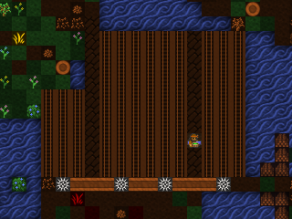Let’s transmit all this power to our pump stack by means of Horizontal Axles, Vertical Axles, and Gear Assemblies. Doing so means creating a permanent opening in our fortress, so we’ll have to build walls to deter invaders.
- Find the two gear assemblies at the top of the pump stack. Dig a
tunnel ten or so tiles north, then dig an Upward Ramp
(
d,r). - Remove the ramp when it’s dug out. In its place, build a Gear Assembly.
We’ll now have a hole in our fortress that we cannot plug - the space will be occupied by a Vertical Axle. Let’s build a small tower around it to mitigate the danger. It’s a great idea to add traps as well. Here’s a design I came up with (the access stairs will be removed after axle and gear installation):
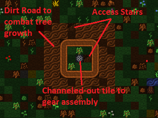 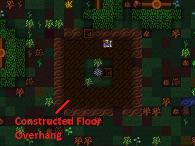Let’s build a series of axles and gear assemblies to transmit power to the pump stack. Use Gear Assemblies for junctions, Horizontal Axles to connect power on the same z-level, and Vertical Axles to connect between the z-levels. Always build from the bottom up, as well.
- Start by building a Vertical Axle over the channeled-out over the underground gear assembly in our tower.
- One z-level above that, build a Gear Assembly.
- Remember: build from bottom up - determine the path of the axle leading out over the tower, then build a Gear Assembly on the ground outside it to transmit the power over the walls.
- Go up a z-level and build a Gear Assembly on top of that one.
- Connect the two upper gear assemblies with a Horizontal Axle.
- Connect the Gear Assembly on the ground outside the tower to the water wheel power plant. Cut down any trees that stand in your way.
- When the machinery is completed, remove (
d,n) the access stairs on the tower.
We must also devise a way to turn off power to the pump stack. Let’s connect a Lever to the Gear Assembliy below the tower. Pulling it will disengage the gear assembly and break the ‘chain’ of power to the pumps. Just be sure not to hook the lever to the supporting gear assembly to the south of the pump stack gear - disconnecting that one may cause the pump stack to collapse for sudden lack of a foundation.
- After connecting the lever to the gear assembly, Pull the Lever to disengage the gear. We don’t want to pump magma before we decide where it will go!
- Complete the power linkage with a Horizontal Axle leading from the disengaged gear assembly to the gear assembly atop the pump stack.
Here is an overview of the setup I devised:
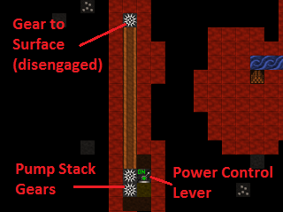 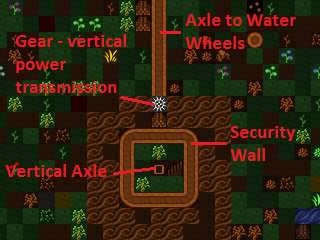 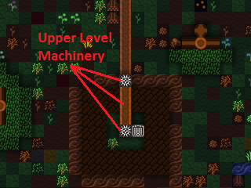 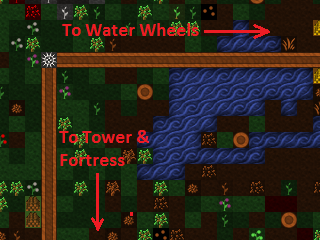 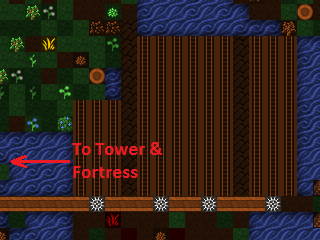With power connected, the only thing we have left to do is dig tunnels to direct the pumped magma and throw the master power lever.
Tower of Babel¶
Magma has a wide range of applications, but for now, I’ve dug out a massive magma-powered factory that will handle all smelting, forging, glassmaking, and kiln operations of the fortress. The specific layout of your magma infrastructure is completely up to you! Perhaps you’d rather build a magma weapon?
Before activating our pump stack, it’s a good idea to Forbid and Keep Tightly Closed the doors on each level of the stack. Otherwise, a cat or child will open one and run flaming throughout the fortress, igniting everything and horrifying everyone.
With that done, it’s time to turn it all on!
- Verify that no one is in the magma tubes. Pumps work fast and leave
little time to get away. Use
d,o,rto restrict access if necessary. - Throw the master power lever and cross your fingers!
The magma flows! It’s working! And our frames per second is in the teens! Turn off the pumps to fix that, by the way.
Surface magma is the key to true mass production of steel, glass, and clay products. We can also weaponize it to burn our enemies into Piles of Ash (see :wiki:` magma mist <Magma_mist>`), combine it with water to create obsidian, or make an awesome magma moat. Let’s start by relocating our smelting, forging, glassmaking, and kilns to the magma factory floor and setting up steel production.
- Hit
b,eto find the Magma Smelter, Magma Glass Furnace, and Magma Kiln. The Magma Forge is built withb,w,v. - Create more magma-safe materials for these workshops if you run short.
- Each magma-powered workshop requires a channeled-out tile leading to the magma below. For maximum safety, plan out your channeling so that the workshops’ impassible tiles cover the exposed magma.
- Delete the old smelters and forges - they are obsolete now.
Below is an example layout for steel production using magma-powered workshops. I connected the various stockpiles to the appropriate workshops, but that’s not strictly necessary and may be more trouble than it’s worth. I also dug an additional magma tunnel to accommodate a lower level dedicated to magma forges. The new magma tunnel doubles as a trap, too!
This is just the beginning of magma’s possibilities! I decided to start converting my outdoor garden to a greenhouse with the addition of a roof made from Clear Glass blocks. No more pesky goblins digging in my potatoes!
My steel production is coming along so well that I’ve had to clear cut the entire map of trees, too. What fun! Once my squads are outfitted, I plan on taking control of the caverns and maybe mining the Adamantine pillar we found in the magma sea.
Good luck with your own magma-fueled adventures and congratulations on completing this tutorial! If you have a chance, I hope you post your volcanic contraptions and resulting Fun on the Bay 12 forums. Praise Armok and strike the earth!